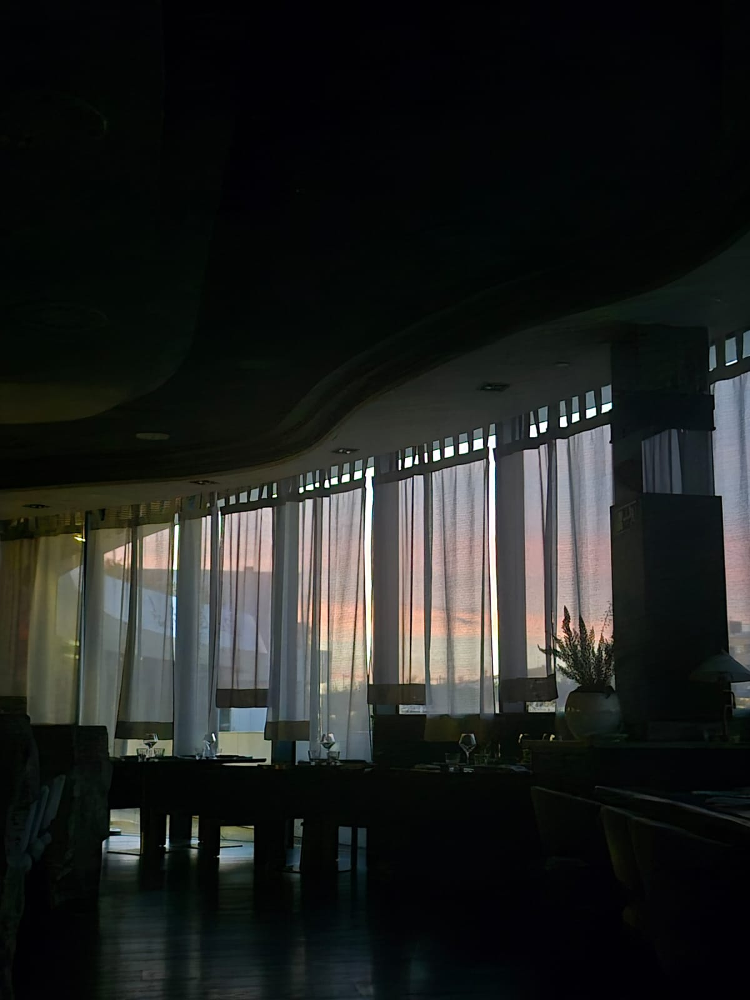

This is a symbolic representation of the things that happened during the time you were gone. I want to honor all the things that were in my heart, the things I love, and the things I left behind when I moved to another country. I remember this time as being hectic, with everything happening everywhere, and ultimately a time when it was easy to lose myself. Please, I invite you to start with the arepa, then explore the items. Ideally, the last item should be the letter.
When I got on that plane to Spain, I left behind a version of me that was complete and comfortable. I traded the comfort of the known for the promise of a future that, upon arrival, felt colder and more foreign than the worst Madrid winter. To leave is to die a little. I have never been a man close to my family, but when I saw them with you, I felt proud of who they are, of their love, and of their affection. I love my parents, Manolo, and my grandmother. I traveled with the guilt of the empty chair at the Sunday table, and that gap will remain forever, but it is only compensated by the internal promise that this sacrifice will be worth it, that one day we will return with full hands to share what we lived, even though we know deep down that one never fully returns to what was before. Manolo will be a little more blind, my parents a little older, and my grandmother, well, she cannot have any more gray hairs.
And here I am, under a gray sky that does not recognize me, trying to prevent success from tasting like loneliness, fighting to be worthy in comparison to my classmates. Time over there did not stop because I crossed to Europe, on the contrary, it seems it accelerated to punish my absence. Manolo will look for me at the door by instinct, bumping into the furniture of a world that is fading for him, and I will not be there to be his eyes. My parents will tell me that everything is going well over a video call, but the pixels cannot hide those new wrinkles I did not see being born, that tiredness in the voice that only the one who loves can recognize.
I left to be someone, but at times I feel I left someone important for the people who love me. I run after the degree, after the contract, after what is to come, but the today escapes me in every WhatsApp audio I listen to three times just to feel I am still close, in every day I spend sitting here. In the end, as Bad Bunny says, life is about museums, but the price of admission is seeing how what you love most withers while you try to flourish in a foreign land. I will return, I know it, but I will return with my heart divided among all the cities that gave me shelter, with glory in my hands, I know it, but with an open wound from knowing that time is the only luxury this country cannot give back to me.
And in the middle of all this noise, of the exams, of the assignments, and of this cold that seems to freeze all my thoughts, there you are. In this country of strangers, you are the only home I keep intact, the port where my fears rest because I know you believe in me even when I lose myself among code and silence. I cry every time I think about what my life is today. Do not ever let me go, my love. You are the support that holds the weight of my ambition, the one who stays on the other side of the screen holding my pieces together when the winter breaks me. You are the most real thing I have in this puzzle of airports and promises. If this sacrifice has a meaning, it is because at the end of the road you are there waiting for me, or rather, walking with me even if your footsteps do not sound on these streets of the rich. Thank you for not letting me go, for being that echo of my voice in the middle of this chaos. Although my hands are here building a future, my heart never got on that plane, it stayed with you back there in Colombia, in Melbourne, in Malaysia.
The days after you left were far too dull. Not much happened, however, as if it were a constant in my life, I was stressed about my visa for Spain. Until the day arrived, I had to prepare myself to go to Spain, I had to pick up my passport. So that was it, I went to get my passport. To be honest, the circumstances were not the best, I was stressed, and I do not even remember the exact words or the reason why. I only remember the feelings, I remember fighting with you, and the weight of feeling judged. It has always been a topic during our relationship, but there is something I never told you, not that time nor during these days. Thank you for having the courage to tell me how you need to be loved. I know that sometimes I get frustrated when I feel my effort is not enough, but I infinitely value that you do not give up on me and that you continue showing me the map of your heart. Because from the first day I knew you were the love of my life, and I promised to love you as you deserve.
I tried to make it clear that I am stupid, we both know that well. I get consumed by my own frustration and I end up hurting what I love most. But I want you to know that my commitment to you is not a formality like a visa, it is a choice I renew every morning, even when it is hard to understand each other, even when life gets difficult, you are always there, and I am a fool about thinking my life was better without you. Maybe the Andres of the past failed many times, but I hope my present self is showing up in the best way, in the way you need. I am willing to learn, to improve, because no matter which version it is, every single one of them is worth it and I could not love them more than I do today.
The words I let out back then do not represent me, but my presence here does. I am with you because in this chaos of visas and distances, you are the only constant that keeps me standing. I could not be luckier to choose you every day. I trust in what we have so much that I am willing to rebuild myself as many times as necessary. I am sure.
Malaysia was never a point on the map or a stamp in my passport, for me, Malaysia was you. I can still feel the cold in my hands, but it was not the cold of Madrid, it was the cold of that emptiness in my chest when I realized that, because of my carelessness, our world was about to collapse. I remember calling you almost in tears at the thought of not seeing you. While I waited for that email, the only thing keeping me on my feet was the image of your smile waiting for me on the other side of the world, that light that does not go out even with the worst of fears. I blamed myself infinitely, and applying for the Malaysia visa only two weeks before was a stupid miscalculation, it was playing Russian roulette with the only thing that kept me afloat, the promise of seeing your face.
I want to tell you how incredible you are. You are the woman who brings calm to my chaos, the one who transforms a mistake into a story to tell, the one who has a faith so great that it ended up pulling the strings of an entire embassy. I felt unworthy of your wait, carrying the guilt of having put at risk the ground we were going to walk on together. I was completely right. Sometimes I dare to think that it is not that we were lucky, it is that the world knows we belong by each other’s side and it did not dare to disagree with us. Either it was destiny or it would have been me. You are the person for whom I would cross any ocean, with or without papers. Heaven gave me permission to breathe at your rhythm again, to be able to be blessed by your presence , and the best part of receiving the confirmation was that Malaysia had already begun the moment I knew that nothing, not even my own head, was going to be able to separate me from you.
At this point I do not know if you have realized, hermosa, that I prefer the pain of working a thousand times in Tottori than the emptiness of your absence. The beginning of my work in that place was promising, elegant, almost perfect in the eyes of anyone looking from the outside. But the reality was different, it was an experience to be forgotten, one of those that I do not want to occupy even one more second of my memory. However, today I smile when I remember it, because the amount of times you would stop the conversation to fight with me about Alfonso or Tamara seems to me like the most adorable thing in the world.
It is beautiful to know that you always have my back no matter what life brings our way. And my love, I want to remind you today and always that I got yours always. If I was able to be strong in Tottori it was because you were my reward. Our lives are not divine intervention for the most part. And I do not want to give this away to destiny, I refuse. I am the one weaving this, us. I want to continue weaving the paths of destiny until they write your name. Because here I love you intentionally, I love you with every gram of energy I have left, those days in Tottori were days of noise. Sometimes after my first shift on the weekends I wanted to run far away from that place, but I thought of you, the reason why I was doing it. I looked out the windows thinking you were sleeping, I imagined myself close to you, feeling your warmth, that day in the restaurant, I closed my eyes and started to dream, thinking about us. That day I took a photo. It was the last day I worked there.
I love what I am studying but there are days when the tiredness does not help and the weight of this intensive course is felt in every muscle. There are moments, sitting in that class, in which I feel small front of the complexity of everything I have to learn, moments in which I look around and only see a noisy strange people who seem to understand better than me. But then you arrive and you call me intelligent. You tell me with such an overwhelming security, with a faith so pure, that I end up believing it myself. During all this time that I have been with you I have realized something that has been clear as water since the first second in which I felt that I felt you mine, my true success has ceased to be a perfect grade for a long time, it is having someone like you who looks at me and sees greatness where I only see someone scared. You are my constant word of affirmation. You are that beautiful melody that I choose to listen to to shield myself when the world becomes noisy and strange. You are the filter that I need when I am on that bus surrounded by forty different students, enduring the lack of respect of the loud guy or when the onion guy appears to put the bitter cherry on top of the cake of the day. In the middle of those smells and those screams, you are there ready to be kind, soft with me.
I want to hug you so close that we mix with each other, until we feel at peace with ourselves, with life itself. The way in which I love you makes me feel quiet, not because I do not want to speak but because in you I found a love that does not demand that I perform, a love that chooses me, that sees me, that stays. Through you, you have shown me that love is not bought, it is not paid, it is only received. That in my inside, I am not that intelligent person that I say I am or that you think I am, but it does not matter, because you will love me just the same.
Every day that I wake up in this country to face this challenge, I do it for you. You are that hope that motivates me, the certainty that this sacrifice is not in vain. Every hour of study, every exam passed and every difficult delivery are, in reality, a step closer to our life together. I am here to build the bridge that takes me back to your arms. Towards that future that awaits us. Thank you for being my entire life.
This begins when you left Colombia. Every time we say goodbye, it feels as if the world becomes much heavier, as if the air thickens, as if people become noisier, and as if walking were a superhuman effort. It is like leaving you there at the airport, in that corner of the world that has become a double edged sword. It violently cuts the distance because it allows me to go see you, but just as it joins us, it separates us.
I left you at El Dorado at the customs gate, knowing that my bed would no longer be shared, that the map of Bogota would stop being a world of options and bookstores, and would return to being that congested city. It would go back to being just a map. I found it hard to believe that things would continue existing without us, that the coffee would still smell the same, and that people would walk the streets without knowing that a universe had just broken.
The first thing I did when I arrived home was jump on my bed and smell your pillow, yes I am a pervert for you, I am beyond help. It is a constant, I had a need to see you, to smell your new perfume, I had hope of seeing you again, fear of not knowing when we would see each other again, and the certainty that our love can do anything. I felt the fear of the current of time that carries us, fear of the distance, fear that you would not reach Melbourne, and yet I was happy to have lived Colombia with you. So, in short, I was screwed and radiant, perhaps more the first than the second. Maybe I am very pessimistic, but did you know that time is round? You probably know it, since you are very smart, and time has no beginning or end. It is immortal. When loneliness looks for me or life calls me, I can grab those infinite memories that were never lost, but rather still remain alive within my existence. May our memories live for us, and every time I look back at our past, I can only be happy that we were joyful back then , that Colombia remains frozen in time, and those memories will be infinite as long as we live. And if one day I miss you, I know you will be there with me, in the memory of when we held hands watching the beautiful palm trees of Cocora, when the universe, finally conspired in our favor and made us eternal.
Hello, Hermosa.
I am glad you have reached the end. This page has been incredibly long because every page is a letter. I do this with a lot of love. The next day will be Malaysia and in a blink this mini project will be over.
I hope you did not cry during this page, my intention is only to celebrate your existence, your love, and your person in general. What a more beautiful way to remember you than looking at our past and at what we have shared. Today was special because we were coming in a format that I feared was tiring you, so I decided to change.
I could write you 1 or 40 letters daily, I do not care. My mind is a bottomless pit because I am proud of what we are and when I write I let my feelings speak for you, in Spanish of course. You have taught me that one can be held so tightly that I forget what it is like not to be held. And it scares me just thinking about the fact that it might not happen, that you will not be by my side. I cannot wrap my head around it, I am very stubborn and I love you very much. I am convinced of our future, whether it is here in Spain or anywhere else. Even if you do not believe it I already imagined a future together, in secret, which is not so secret anymore, I take note of what you want, of the gifts you would like, and of the ring I will buy you.
And it is because, my love, I want to build a life together, I want to dream, learn, and grow with you. I cannot wait to see you as the mother of my children, the person that one day I will call wife. I cannot wait to see your heart grow far from so many insecurities that follow us every day. I want to watch you grow and nurture you with that same grace and strength with which you capture my heart. This is a secret, love. A long time ago I married you in my head, it is just that we are building ourselves to get there. My life is yours, my love will be there regardless of the season or the place. I cannot wait one more second without seeing you. I miss the way the light rested on your face in Colombia, I miss the way you touched me, I miss your smell. I miss you.
But do not fall for illusions, this is not a love letter, it is a business letter. Here in this letter I am offering you my heart, in these pages my thoughts. I am trying to resolve our business, yours and mine, so that both of us have something to gain, me more than you, because I win you, and you, instead, will only manage to get this disoriented and sick boy, little by little not so disoriented let us say, but certainly very lovesick for you.
Thanks for picking me daily, pretty.